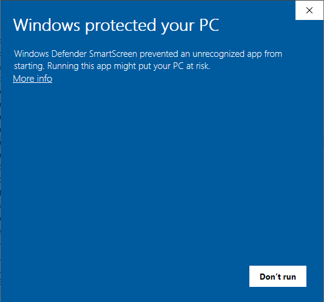

How to Update Costs Drawer
Checking for updates
Costs Drawer will automatically check for updates when connected to the internet, and will notify you when an update is available.
This will always be the most recent update available.
You will be asked whether you wish to download the update, clicking "Yes" will start the download process.
Downloading the update
The download progress bar is visible at the bottom of the window, and you can continue to work as normal while the update is downloaded.
Once the update has finished downloading, it will open automatically, and you will be prompted to close Costs Drawer.
Note: Costs Drawer must be closed before continuing with the installation, otherwise the installation process will fail. Remember to save any open documents before closing!
If anything goes wrong during the download, such as being disconnected from the internet, simply restart Costs Drawer to try again.
Windows may warn you about the installer
It is normal for Windows to warn users when Microsoft doesn't recognise the software.
In Windows 10, if prompted with the blue window, simply click on "More info"...

This will cause a new button to appear below that reads “Run anyway”, so go ahead and click on that.
The Costs Drawer installer will then run as normal.
Installing the update
Once Costs Drawer is closed you can continue with the installation. If you can't see the installation window, check the taskbar for it.
You can then simply follow the instructions in the installer.
Note that it is recommended that you use the default install options, especially the install directory. However, if you've already installed DirectX 9.0 previously, you can uncheck "DirectX Install" to speed up the installation process.
Once installation is complete, you will be able to restart Costs Drawer automatically upon clicking "Finish".
Costs Drawer will then restart (provided you left the box checked) and will be updated to the latest version.